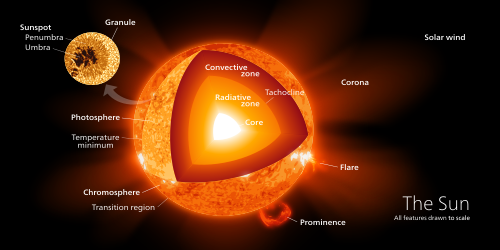

The Sun
The Sun is the star at the centre of the Solar System. It is a nearly perfect ball of hot plasma, heated to incandescence by nuclear fusion reactions in its core, radiating the energy mainly as visible light, ultraviolet light, and infrared radiation. It is by far the most important source of energy for life on Earth. Its diameter is about 1.39 million kilometers (864,000 miles), or 109 times that of Earth. Its mass is about 330,000 times that of Earth, and it accounts for about 99.86% of the total mass of the Solar System. Roughly three quarters of the Sun's mass consists of hydrogen (~73%); the rest is mostly helium (~25%), with much smaller quantities of heavier elements, including oxygen, carbon, neon and iron.
According to its spectral class, the Sun is a G-type main-sequence star (G2V). As such, it is informally, and not completely accurately, referred to as a yellow dwarf (its light is closer to white than yellow). It formed approximately 4.6 billion years ago from the gravitational collapse of matter within a region of a large molecular cloud. Most of this matter gathered in the center, whereas the rest flattened into an orbiting disk that became the Solar System. The central mass became so hot and dense that it eventually initiated nuclear fusion in its core. It is thought that almost all stars form by this process.
The Sun's core fuses about 600 million tons of hydrogen into helium every second, converting 4 million tons of matter into energy every second as a result. This energy, which can take between 10,000 and 170,000 years to escape the core, is the source of the Sun's light and heat. When hydrogen fusion in its core has diminished to the point at which the Sun is no longer in hydrostatic equilibrium, its core will undergo a marked increase in density and temperature while its outer layers expand, eventually transforming the Sun into a red giant. It is calculated that the Sun will become sufficiently large to engulf the current orbits of Mercury and Venus, and render Earth uninhabitable – but not for about five billion years. After this, it will shed its outer layers and become a dense type of cooling star known as a white dwarf, and no longer produce energy by fusion, but still glow and give off heat from its previous fusion.